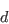
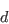
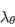
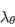
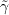

|
Langley Research CenterTurbulence Modeling Resource |
The Langtry-Menter 4-equation Transitional SST Model
This web page gives detailed information
on the equations for various forms of the
Langtry-Menter transitional shear stress transport turbulence model.
All forms of the model given on this page are linear eddy viscosity models.
Linear models use the Boussinesq assumption for the constitutive relation:
Unless otherwise stated, for compressible flow with heat transfer this model is implemented as described on the page
Implementing Turbulence Models into the Compressible RANS Equations, with perfect gas
assumed and Pr = 0.72, Prt = 0.90, and Sutherland's law for dynamic viscosity.
Return to: Turbulence Modeling Resource Home Page Langtry-Menter 4-equation Transitional SST Model
(SST-2003-LM2009)
This model is also sometimes known as the "gamma-Retheta-SST" model, because it makes use of equations for "gamma" and "Retheta" in
addition to SST's "k" and "omega" equations. The primary reference for the standard implementation of the Langtry-Menter 4-equation Transitional SST
model is:
In the interest of clarity and to remove ambiguity in the implementation of this model, some nomenclature and the presentations of some functional definitions have been altered from the original reference.
Also note that there is some minor confusion in the literature for this model. The papers
mostly reference the original (standard) Menter SST model, but the PhD thesis from which the
model was derived as well as Flow, Turbulence, and Combustion 77(1):277-303, 2006 both make use of the
SST-2003 base model. Thus, the default four-equation model here is based on the
two-equation SST-2003 model, augmented by two additional equations to
describe the laminar-turbulent transition process. (See ending paragraph for naming conventions when basing
this transition model off of different SST base models.)
The model is given by the following:
The equations have been
written above to be in proper conservation form, consistent with, e.g., Wilcox (in Turbulence Modeling for CFD,
DCW Industries, Inc., La Canada, CA, 2006), Menter et al (in Turbulence, Heat and Mass Transfer 4, 2003, pp. 625-632),
and Menter (in NASA TM 103975, 1992,
https://ntrs.nasa.gov/citations/19930013620).
The source terms for the equation are defined as:
The source term of the IMPORTANT: The expression for The calibration constants for the Langtry-Menter model are:
The effects of laminar-turbulent transition are introduced to the underlying SST model by modifying the turbulent-kinetic-energy source terms as:
A modification to the SST For numerical robustness, the following three limits are enforced:
Unless stated otherwise above, the functional definitions and calibration constants of the underlying
SST-2003 turbulence model should not be altered when used with the Langtry-Menter transition model.
This includes the definition of the turbulent eddy viscosity, which should be calculated in an identical manner to that of the
SST-2003 model.
If the Langtry-Menter model
is applied to a different base SST model, the naming of the model should reflect it. As mentioned above, the
SST-2003-LM2009 model is based off of the
SST-2003 model. If based off of the
"standard" SST model instead, then
the transition model should be referred to as SST-LM2009.
Similarly, if based off of
SST-2003m, it would be SST-2003m-LM2009.
Or, if adding Langtry-Menter transition to
SST-V, the model should be referred to as
SST-V-LM2009, etc.
This model is not Galilean invariant, due to its explicit use of the velocity vector.
Langtry-Menter 4-equation
Transitional SST Model with Stationary Crossflow Extension
(SST-2003-LM2015)
The SST-2003-LM2015 version represents an extension to the SST-2003-LM2009 model. It incorporates transition due to
stationary crossflow (SCF) instability.
The reference for this version of the model is:
As discussed in AIAA-2020-1034, the SST-2003-LM2009 and SST-2003-LM2015 models are supposed to be implemented with
SST-2003 as their underlying turbulence model. However, the calibration of SST-2003-LM2015 reported in AIAA-2015-2474 was
likely done based on an implementation with the original (SST) model version as its underlying turbulence model.
Therefore, the calibration may need to be revisited.
The model is the same as SST-2003-LM2009, except that it
adds the term DSCF to the right-hand-side of the transport equation for
where with L being the local grid length.
The quantity where Fwake takes on the same value as that used in the formulation of the
production term in the original SST-2003-LM2009 model.
Since a dominant source for the excitation of the stationary crossflow instability is believed to be the
surface roughness,
The hroughness is a required input to this model.
It should be noted that the above equation involves
Wing-like Crossflow-Extension
to the Langtry-Menter 4-equation Transitional SST Model
(SST-2003-LM2009-CFC1)
The SST-2003-LM2009 model was extended to predict transition due to crossflow instability in three-dimensional
boundary layers. This model is identical to the SST-2003-LM2009 model except for the source term in the
The primary reference of the Crossflow-Extension is:
This model is one of two different approaches described in the above
reference. While this approach (SST-2003-LM2009-CFC1) strongly relies on the
infinite yawed wedge flow at zero angle of attack and the C1-criterion, the other
approach (SST-2003-LM2009-CFHE, described below)
is based on the local helicity in the flow. Both approaches are not
Galilean invariant due to the explicit use of the velocity vector.
For both approaches a function is introduced:
The application of the SST-2003-LM2009-CFC1 approach is restricted to
wing-like geometries. Applying it to arbitrary geometries is beyond the model's scope.
The In the denominator of ,
the local crosswise displacement thickness Reynolds number at transition onset
The approximated local shape factor is defined by:
General Crossflow-Extension
to the Langtry-Menter 4-equation Transitional SST Model
(SST-2003-LM2009-CFHE)
The SST-2003-LM2009 model was extended to predict transition due to crossflow instability in three-dimensional
boundary layers. This model is identical to the SST-2003-LM2009 model except for the source term in the
The primary reference of the Crossflow-Extension is:
This model is one of two different approaches described in the above
reference. This approach (SST-2003-LM2009-CFHE)
is based on the local helicity in the flow. The other approach
(SST-2003-LM2009-CFC1, described above) strongly relies on the
infinite yawed wedge flow at zero angle of attack and the C1-criterion.
Both approaches are not
Galilean invariant due to the explicit use of the velocity vector.
For both approaches a function is introduced:
There are no restrictions concerning the application of the SST-2003-LM2009-CFHE approach to arbitrary geometries.
The Helicitiy Reynolds number at transition onset is
given by an empirical criterion:
See above SST-2003-LM2009-CFC1 section
(or the original reference) for details on how to compute the
term.
Return to: Turbulence Modeling Resource Home Page Jim Coder of Penn State is acknowledged for putting together the SST-2003-LM2009 portion of this webpage, and
Cornelia Grabe of DLR is acknowledged for putting together the SST-2003-LM2009-CFC1
and SST-2003-LM2009-CFHE portions of this webpage.
Balaji Venkatachari of NIA is acknowledged for his help with SST-2003-LM2015.
Recent significant updates: Responsible NASA Official:
Ethan Vogel

Note that this reference is missing a key functional definition
( ). The missing definition for the "standard" implementation is instead taken from:
). The missing definition for the "standard" implementation is instead taken from:
![\frac{\partial \left( \rho k \right)}{\partial t} + \frac{\partial \left( \rho u_j k \right)}{\partial x_j} = \hat P_k - \hat D_k + \frac{\partial}{\partial x_j} \left[ \left( \mu + \sigma_k \mu_t \right) \frac{\partial k}{\partial x_j} \right]](langtrymenter_eqns/img1.png)
![\frac{\partial \left( \rho \omega \right)}{\partial t} + \frac{\partial \left( \rho u_j \omega \right)}{\partial x_j} = P_{\omega} - D_{\omega} + \frac{\partial}{\partial x_j} \left[ \left( \mu + \sigma_{\omega} \mu_t \right) \frac{\partial \omega}{\partial x_j} \right] + 2 \left( 1 - F_1 \right) \frac{\rho \sigma_{\omega 2}}{\omega} \frac{\partial k}{\partial x_j} \frac{ \partial \omega}{\partial x_j}](langtrymenter_eqns/img2.png)
where


![F_{onset3} = max \left[ 1 - \left( \frac{R_T}{2.5} \right)^3, 0 \right]](langtrymenter_eqns/img11.png)


![F_{length,1} = \left\{
\begin{array}{ll}
39.8189 + (-119.270 \cdot 10^{-4}) \hat Re_{\theta t} + (-132.567 \cdot 10^{-6}) \hat Re_{\theta t}^2, & \hat Re_{\theta t} < 400; \\
263.404 + (-123.939 \cdot 10^{-2}) \hat Re_{\theta t} + (194.548 \cdot 10^{-5}) \hat Re_{\theta t}^2 + (-101.695 \cdot 10^{-8}) \hat Re_{\theta t}^3, & 400 \leq \hat Re_{\theta t} < 596 ;\\
0.5 - (3.0\cdot 10^{-4})(\hat Re_{\theta t} - 596.0), & 596 \leq \hat Re_{\theta t} < 1200; \\
0.3188 & 1200 \leq \hat Re_{\theta t}
\end{array} \right.](langtrymenter_eqns/img14.png)

(Note that this last expression looks slightly different from Eq. (16) of AIAA Journal 47(12):2894-2906, 2009 because two of the terms have been combined:
(10120.656x10-4)
 =
+ 120.656x10-4
.)
In the above, is the density, is the molecular dynamic viscosity,  is the distance from the field point to the nearest wall, is the strain rate magnitude, and is the vorticity magnitude, with
=
+ 120.656x10-4
.)
In the above, is the density, is the molecular dynamic viscosity,  is the distance from the field point to the nearest wall, is the strain rate magnitude, and is the vorticity magnitude, with
equation is defined as:
for which

![F_{\theta t} = min \left[ max \left( F_{wake} exp \left(- \left( \frac{d}{\delta} \right) ^4 \right) , 1.0 - \left( \frac{c_{e2}\gamma - 1}{c_{e2} - 1}\right) ^2 \right), 1.0 \right]](langtrymenter_eqns/img28.png)
![F_{wake} = exp \left[ - \left( \frac{Re_{\omega}}{1\cdot 10^{5}} \right) ^2 \right]](langtrymenter_eqns/img30.png)

![F \left( \lambda_{\theta} \right) = \left\{
\begin{array}{ll}
1 + \left[ 12.986 \lambda_{\theta} + 123.66 \lambda_{\theta} ^2 + 405.689 \lambda_{\theta} ^3 \right] exp \left( -\left( \frac{Tu}{1.5} \right)^{1.5} \right), & \lambda_{\theta} \leq 0; \\
1 + 0.275 \left[1 - exp \left( -35.0 \lambda_{\theta} \right) \right] exp \left( - \frac{Tu}{0.5} \right) & \lambda_{\theta} > 0
\end{array} \right.](langtrymenter_eqns/img35.png)
 is an implicit function of through the presence of  since
is an implicit function of through the presence of  since
(the equations for  are typically
solved by iterating on the value of ).
Note that in the nomenclature of AIAA Journal 47(12):2894-2906, 2009, the expression for
uses a "local freestream velocity" for U, which is actually
intended to be the velocity at the edge of the boundary layer. But in the functionality
of the model, this velocity needs to be the local velocity. Although
is small for small velocities (i.e. near the wall
in a boundary layer), this effect is accounted for in the model with the F_theta_t term. Outside of the boundary layer, the transported
is "attracted" to the equilibrium value
() and is physically correct at the edge of the boundary layer.
Inside the boundary layer, the attraction is suppressed and the value at the edge is diffused into the boundary layer.
are typically
solved by iterating on the value of ).
Note that in the nomenclature of AIAA Journal 47(12):2894-2906, 2009, the expression for
uses a "local freestream velocity" for U, which is actually
intended to be the velocity at the edge of the boundary layer. But in the functionality
of the model, this velocity needs to be the local velocity. Although
is small for small velocities (i.e. near the wall
in a boundary layer), this effect is accounted for in the model with the F_theta_t term. Outside of the boundary layer, the transported
is "attracted" to the equilibrium value
() and is physically correct at the edge of the boundary layer.
Inside the boundary layer, the attraction is suppressed and the value at the edge is diffused into the boundary layer.
The boundary conditions for and are:


where the subscript 'SST' refers to the functional definitions of the base SST model being used. The form of the specific dissipation equation is unaltered.
![F_{reattach} = exp \left[ - \left( \frac{R_T}{20} \right) ^4 \right]](langtrymenter_eqns/img42.png)
 blending function is required with the Langtry-Menter model:
blending function is required with the Langtry-Menter model:

 (missing "eq" added 8/16/2021)
(missing "eq" added 8/16/2021)
 .
DSCF is a new sink term that accounts for the SCF effects. It takes the form:
.
DSCF is a new sink term that accounts for the SCF effects. It takes the form:
 ; and
; and
 is the same as in the
SST-2003-LM2009 model. However, the timescale T has been limited here to improve robustness
for some high unit Reynolds number flows:
is the same as in the
SST-2003-LM2009 model. However, the timescale T has been limited here to improve robustness
for some high unit Reynolds number flows:
 (added 10/13/2021)
(added 10/13/2021) represents the transition onset momentum thickness Reynolds number corresponding to SCF induced transition.
Details pertaining to the evaluation of this quantity are given below. The last term in the equation for DSCF,
,
has been included to ensure that the sink term is only active within the laminar parts of the boundary layer.
It is expressed as:
represents the transition onset momentum thickness Reynolds number corresponding to SCF induced transition.
Details pertaining to the evaluation of this quantity are given below. The last term in the equation for DSCF,
,
has been included to ensure that the sink term is only active within the laminar parts of the boundary layer.
It is expressed as:
is
correlated as a logarithmic function of the nondimensional rms amplitude of the surface roughness:

 on both sides, so it must be
solved iteratively by using a procedure such as the Newton-Raphson or the shooting method.
Note that this correlation was derived on the basis of transition measurements for the NLF(2)-0415 45 degree
swept aifoil, together with additional data derived from the stability computations of the same NLF(2)-0415
airfoil at various sweep angles. The last two terms on the right hand side of the above correlation
represent the shifts needed to account for the changes in the crossflow strength relative to that in the
NLF(2)-0415 experiment.
They are defined as:
on both sides, so it must be
solved iteratively by using a procedure such as the Newton-Raphson or the shooting method.
Note that this correlation was derived on the basis of transition measurements for the NLF(2)-0415 45 degree
swept aifoil, together with additional data derived from the stability computations of the same NLF(2)-0415
airfoil at various sweep angles. The last two terms on the right hand side of the above correlation
represent the shifts needed to account for the changes in the crossflow strength relative to that in the
NLF(2)-0415 experiment.
They are defined as:

where


This model is not Galilean invariant, due to its explicit use of the velocity vector.
 equation. To account for the additional transition
mechanism it is changed to:
equation. To account for the additional transition
mechanism it is changed to:
![P_{\gamma} = \left(F_{length} [\gamma F_{onset}]^{0.5} + F_{length,CF} [\gamma F_{onset,CF}]^{0.5}\right)
c_{a1} \rho S \left(1 - c_{e1} \gamma\right)](langtrymentercross_eqns/img3.png)
 functions are defined by:
functions are defined by:


where .
The local crosswise displacement thickness Reynolds number
in the numerator of is defined by:


 is determined by the C1 criterion:
is determined by the C1 criterion:
![Re^{\star}_{\delta 2t} = \frac{300}{\pi} \arctan \left[
\frac{0.106}{\left(H_{12}^{\star}-2.3\right)^{2.052}} \right],](langtrymentercross_eqns/img23.png)


![\left|\vec{u}_{e}\right| = \sqrt{u_\infty^2 + \frac{2
\tilde\gamma}{\tilde\gamma - 1} \left[1 -
\left(\frac{p}{p_{\infty}}\right)^{1-\frac{1}{\tilde\gamma}}\right]
\frac{p_\infty}{\rho_{\infty}}}](langtrymentercross_eqns/img34.png) <- typo fixed 11/11/2018
<- typo fixed 11/11/2018

where  is the heat capacity ratio.
equation. To account for the additional transition
mechanism it is changed to:


where . Note that this constant also
appears in the SST-2003-LM2009-CFC1 model, but with a different numerical value.
The local Helicity Reynolds number is defined by:

10/13/2021 - inserted missing equation for limited timescale in SST-2003-LM2015
08/16/2021 - added clarification about equation for Re_theta_c; fixed typo in limit term
04/06/2021 - added description of SST-2003-LM2015
02/25/2021 - added a few clarifying equations regarding the computation of d|ue|/ds
11/11/2018 - fixed typo in abs(u_e) equation for SST-2003-LM2009-CFC1 (removed "d")
09/14/2018 - added notes describing apparent differences between SST-2003-LM2009 and the original AIAA Journal
11/09/2017 - added SST-2003-LM2009-CFC1 and SST-2003-LM2009-CFHE models
05/24/2017 - fixed typo in E_gamma equation (it was missing a gamma)
Page Curator:
Clark Pederson
Last Updated: 03/10/2022